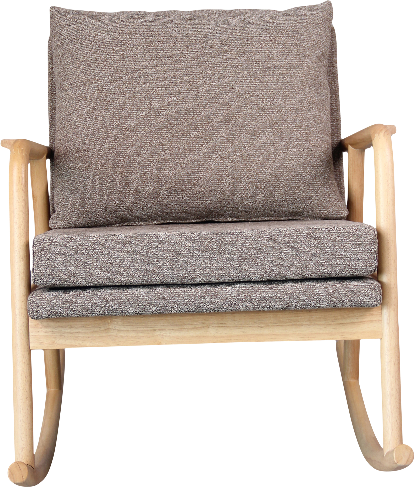
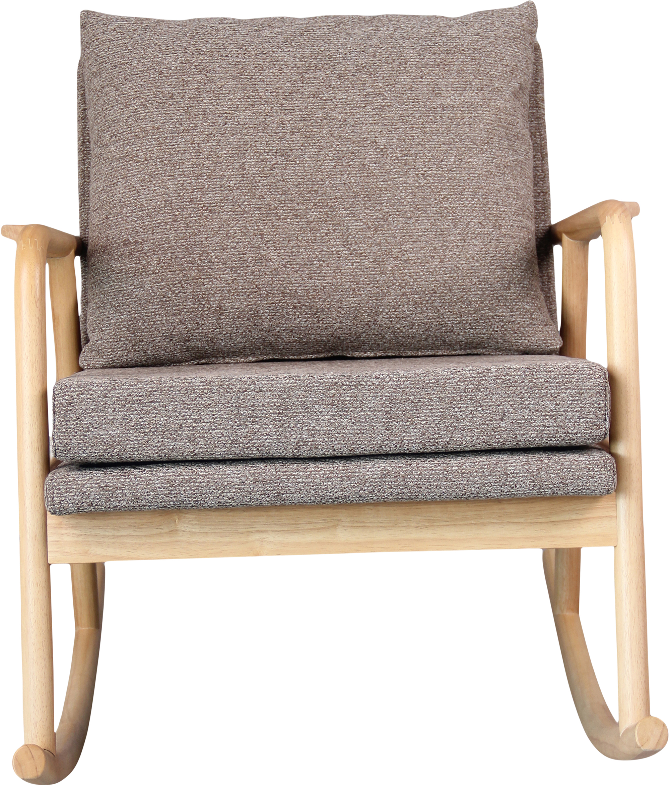

Swan keinutuoli, natural kumipuu runko / ruskea kangas
198102
 

Kuvaus
Swan-keinutuoli on tyylikäs ja moderni lisä mihin tahansa tilaan. Valmistettu kestävästä luonnollisesta kumipuusta, vaaleanruskea sävy korostaa puun kauniita sävyjä. Muhkeat ruskeat tyynyt tarjoavat optimaalista mukavuutta, ja leveät jalat takaavat vakaan keinumisen. Sopii erinomaisesti olohuoneeseen tai terassiisi.